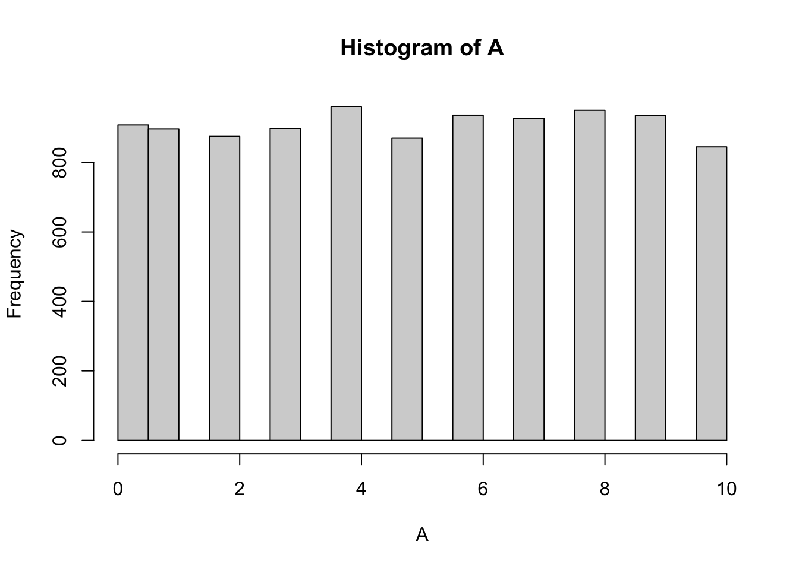
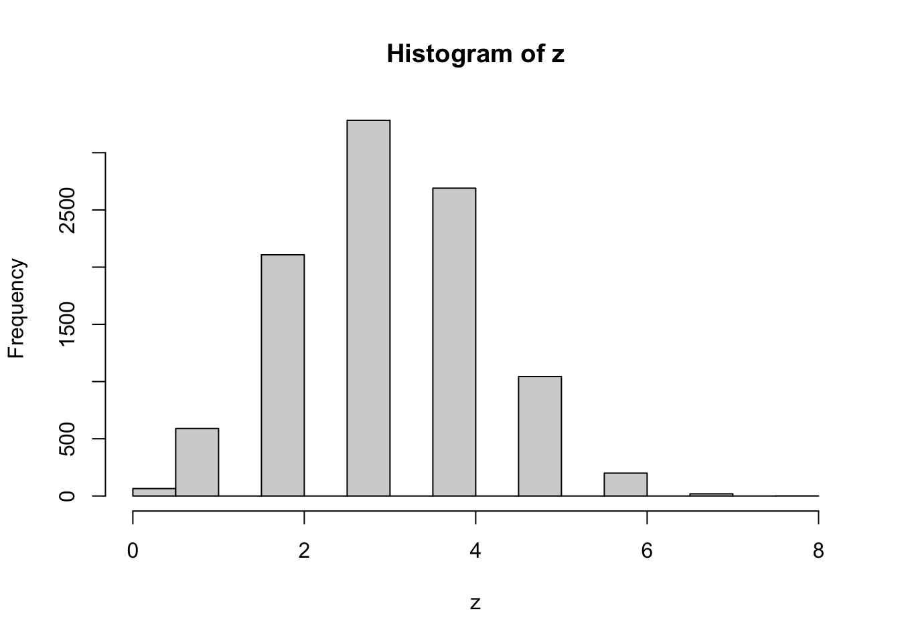
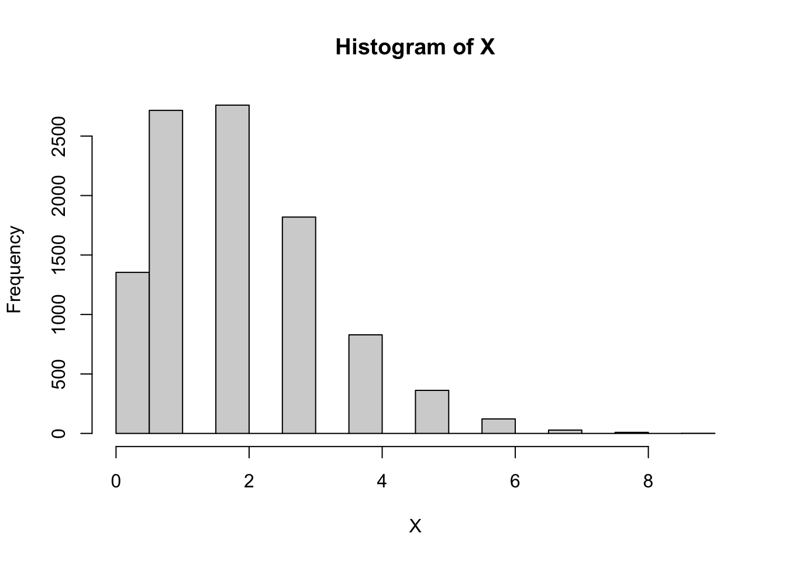
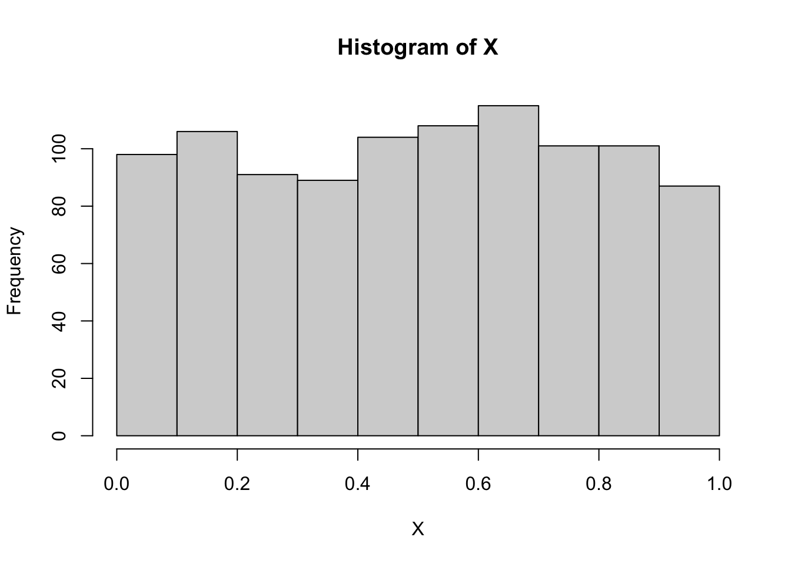
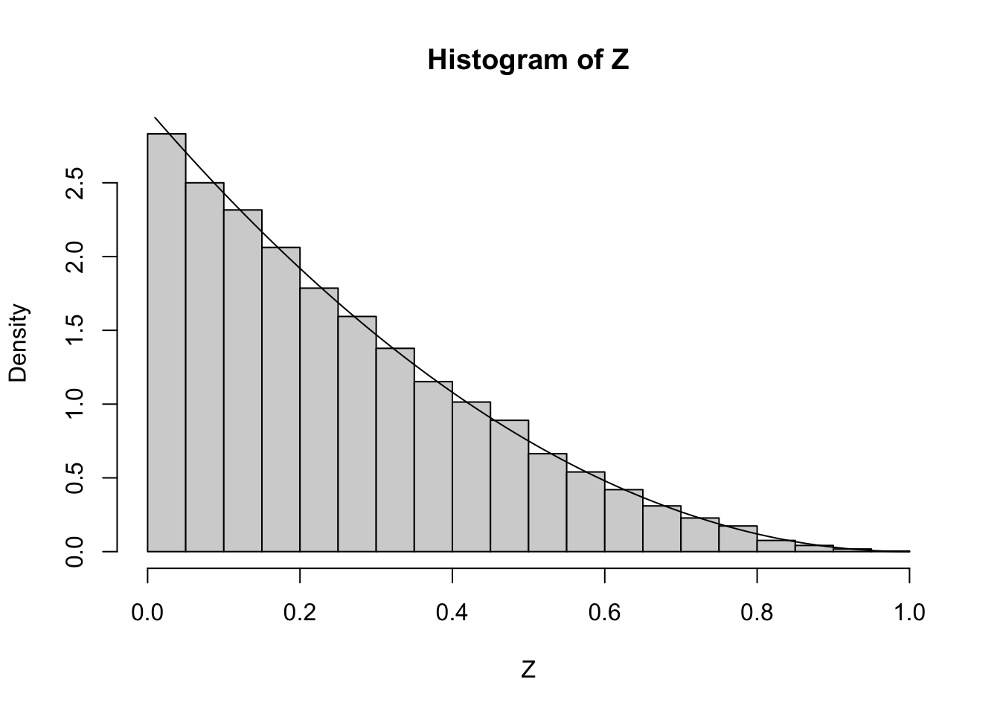
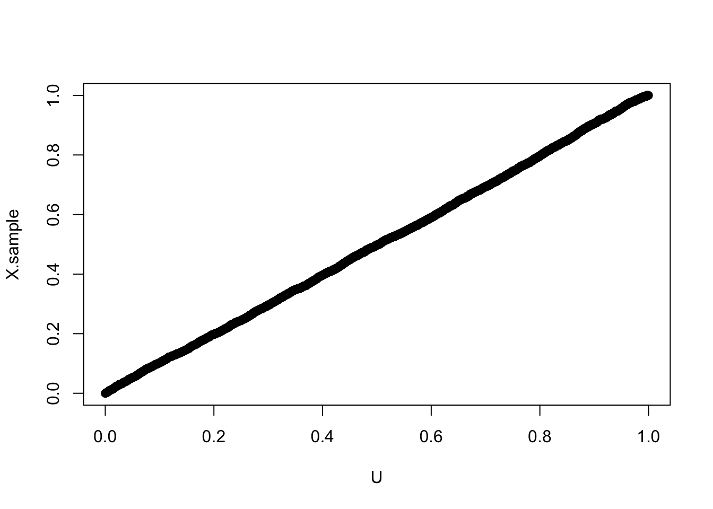

if the variable can take on finite, countable values with equal probability, it is said to be discrete uniform. The probability mass function of a discrete uniform. random variable \(X\) is given by \[
f(x) = \frac{1}{x_n-x_1+1},\quad \text{for}\quad x=x_1,\dots,x_n.
\]
The mean and variance of the discrete uniform distribution are \[
\mathbb{E}X = \frac{x_1+x_n}{2},\quad \text{and}\quad \mathbb{V}ar(X) = \frac{(x_n-x_1+1)^2 -1}{12}.\]
9.1.1.1 Implementation in R
There is no buildt-in function t osimlate from the discrete uniform distributions. Hence, we need to download additional packages.
pacman::p_load(extraDistr)library(extraDistr)# Generate random sample from Uniform(0, 10)A <-rdunif(10000, 0, 10) # Histogram of the samplehist(A)

# Sample mean and variancemean(A)
[1] 5.01
var(A)
[1] 9.875088
# Theoretical mean of Uniform(a, b) is (a + b)/2(mean.est <- (min(A) +max(A)) /2)
[1] 5
# Theoretical variance of Uniform(a, b) is (b - a)^2 / 12(var.est <- ((max(A) -min(A) +1 )^2-1 ) /12)
[1] 10
9.1.2 Bernoulli Distribution
There are only 2 possible outcomes in an experiment: True and False, with probabiltiy \(\theta\) and \(1-\theta\), respectively, the random variable \(X\) follows a Bernoulli distribution, denoted by \(X\sim \text{Bern}(\theta)\). The probabiltiy distribution has probablity mass function as \[f(x) = \theta^x (1-\theta)^{1-x},\quad x=0,1.\]
Note that Bernoulli distribution is a special case of the Binomial distribution with \(n=1\).
9.1.2.1 Implementation in R
rbinom(10, 1, 0.7) # 0.7 is the probability of success
9.1.3 Binomial Distribution
Bernoulli trials (experiment where a Bernoulli Distribution applies) are not very realistic in real-life scenario. In statistics, repeated experiments are important. When the experiments is repeated, \(\theta\) is the same for each of the trials, and the trials are independent, and they are only two mutually excludes outcomes (T, and F), we can model this using the Binomial Distribution. If \(X\) follows the Binomial Distribution, it has a probablitliy mass function as \[b(x ; n, \theta)=\binom{n}{x} \theta^x(1-\theta)^{n-x}, x=0,1,2,3, \ldots, n.\]
The Binomial Distribution is useful to predict the number of heads in \(n\) coin tosses, the number of people infected with a disease in a certain population of known size, etc. The parameters \(n\) and \(\theta\) must be given.
The mean and variance of the Binomial Distribution \[
\mathbb{E}X = n\theta,\quad \text{and}\quad \mathbb{V}ar(X) = n\theta(1-\theta).\]
9.1.3.1 Implementation in R
X =rbinom(10000, 4, prob =0.3)mean(X ==1)
[1] 0.4096
mean(X >1)
[1] 0.3435
9.1.4 Geometric Distribution
If we are interested in the number of trials until the first success, then this is modeled by the geometric distribution. A random variable \(X\) follows a geometric distribution if and only if its probability distribution is given by: \[
g(x;\theta) = \theta (1 - \theta)^{\,x-1}, \quad x = 1,2,3,\ldots
\]
# Function to generate n samples from Geometric(p)geom.gener <-function(n, p) { tmp <-NULLfor (i in1:n) { u <-runif(1) # Uniform(0,1) x <-1 p.x <- p sum <- p.xwhile (sum < u) { x <- x +1 p.x <- p.x * (1- p) sum <- sum + p.x } tmp <-c(tmp, x) }return(tmp)}# Example: generate 100,000 samples with p = 0.75x <-geom.gener(100000, 0.75)# Relative frequenciestable(x) /100000
Do you notice the difference between the two functions? R starts the geometric distribution at \(x = 0\) and not \(x = 1\). We can check that both of these simulate the same distribution by checking a qqplot.
# Correlation between points in QQ plotcor(qqplot(x, X +1)$x, qqplot(x, X +1)$y)
[1] 0.9974553
9.1.5 Hypergeometric Distribution
The motivating question: what happens in a Binomial setting when our trials are NOT independent? In other words, what happens when we sample without replacement?
Consider a set of N elements, of which M are successes. We are interested in obtaining X successes in n trials. This situation is modeled by the Hypergeometric Distribution, which has pdf:
\[h(x,n,M,N) = \frac{\binom{M}{x}\binom{N-M}{n-x}}{\binom{N}{n}}, \quad x = 0,1,2,\ldots,n\]
The mean and the variance are \[\mathbb{E}X = \frac{nM}{N}, \qquad
\mathbb{V}ar(X) = \frac{nM(N-M)(N-n)}{N^2(N-1)}.\]
9.1.5.1 Implementation in R
# Define population: 12 ones and 13 zerosx <-c(1,1,1,1,1,1,1,1,1,1,0,0,0,0,0,0,0,0,0,0,0,0,0,0,0)# Take one sample of size 8 without replacements1 <-sample(x, 8, replace =FALSE)s1
[1] 1 1 0 0 0 0 0 1
# Count how many ones in that samplesum(s1 ==1)
[1] 3
# Repeat the sampling 10,000 timesy <-replicate(10000, sample(x, 8, replace =FALSE))# Column sums = number of ones in each samplez <-colSums(y)# Histogram of simulated distributionhist(z)

# Probability of getting exactly 5 onesmean(z ==5)
[1] 0.1044
# Sample mean and variance of distributionmean(z)
[1] 3.1976
var(z)
[1] 1.365891
9.1.6 Poisson Distribution
Calculating Binomial probabilities when \(n\) is large can be highly tedious and time-consuming. As \(n\) approaches infinity and the probability of success approaches \(0\), where \(n\theta\) remains fixed. We can define \(n\theta = \lambda\), and obtain the distribution called Poisson.
A random variable X has the Poisson Distribution if and only if its probability distribution is given by:
\[P(x;\lambda) = \frac{\lambda^x e^{-\lambda}}{x!}, \quad x = 0,1,2,\ldots\]
# Generate 10,000 samples from Poisson(λ = 2)X <-rpois(10000, 2)# Histogram of simulated datahist(X)

# Probability that X > 3 (estimated by simulation)mean(X >3)
[1] 0.1351
# Probability that X = 0 (estimated by simulation)mean(X ==0)
[1] 0.1354
# Theoretical probability that X = 0exp(-2)
[1] 0.1353353
# Sample mean and variance of simulated distributionmean(X)
[1] 1.9828
var(X)
[1] 1.9549
The mean and variance of the Poisson distribution are
The Poisson distribution is derived as the limiting case of the Binomial (with the above mentioned restrictions) BUT there are many more applications. It models:
Number of successes to occur in a given time period
Number of telephone calls received in a given time
Number of misprints on a page
Number of customers entering a bank during various intervals of time
⸻
We are now moving onto the continuous distributions that play an important role in Statistical Theory.
9.2 Continuous Distributions
9.2.1 Uniform Distribution
Similar to the discrete uniform distribution except all values within an interval have equal probability. The parameters of the Uniform Density are and (< ). The random variable X has the Uniform Distribution if it is continuous and its probability density function is given by \[
f_X(x) =
\begin{cases}
\dfrac{1}{\beta - \alpha}, & \alpha < x < \beta, \\[1ex]
0, & \text{otherwise}.
\end{cases}
\]
The mean and variance of the Uniform Distribution are \[\mathbb{E}X = \frac{\alpha + \beta}{2},
\qquad
\mathbb{V}ar(X) = \frac{(\beta - \alpha)^2}{12}.
\]
9.2.1.1 Implementation in R
X <-runif(1000)# Histogram of simulated datahist(X)

mean(X); var(X)
[1] 0.4993008
[1] 0.08124158
9.2.2 Gamma Distribution
The Gamma function is defined as \[\Gamma(\alpha) = \int_{0}^{\infty} y^{\alpha - 1} e^{-y} \, dy.\]
For any positive integer \(\alpha > 0\), \[\Gamma(\alpha) = (\alpha - 1)!\]
A continuous random variable follows a Gamma Distribution if and only if its probability density function is of the form \[f_X(x) =
\begin{cases}
\dfrac{1}{\beta^{\alpha}\Gamma(\alpha)} x^{\alpha - 1} e^{-x/\beta}, & x > 0, \\[2ex]
0, & \text{otherwise},
\end{cases}\] where \(\alpha, \beta\) are positive. The parameters \(\alpha\) and \(\beta\) determine the shape of the distribution. \(\alpha\) is called the shape parameter and \(\beta\) is called the scale parameter.
Theorem: The mean and variance of the Gamma Distribution are \[\mathbb{E}X = \alpha \beta,
\qquad
\mathbb{V}ar(X) = \alpha \beta^2\]
9.2.2.1 Implementation in R
rgamma(n =10, shape =10, scale =3)
9.2.3 Exponential Distribution
A special case of the Gamma Distribution arises when \(\alpha = 1\). To differentiate it from the Gamma distribution, we also let \(\beta = \theta\). A continuous random variable follows an Exponential Distribution if and only if its probability density function is of the form: \[f_X(x) =
\begin{cases}
\dfrac{1}{\theta} e^{-x/\theta}, & x > 0, \\[2ex]
0, & \text{otherwise}.
\end{cases}\]
Exponential Distributions have many applications. One of them is a waiting time until the first success of a Poisson process. In this situation, it is often better to model the phenomenon in terms of a rate parameter (i.e. 4 calls per week). Thus, the distribution of waiting times becomes: \[
f_Y(y) =
\begin{cases}
\lambda e^{-\lambda y}, & y > 0, \\[2ex]
0, & \text{otherwise}.
\end{cases}\]
9.2.3.1 Memoryless Property
This is also called the Markov Property. The distribution of waiting time does not depend on how long you have already waited. In other words: \[
P(X > s + t \mid X > t) = P(X > s).
\]
The mean and variance of the exponential distribution are \[\mathbb{E}X = \theta,
\qquad
\mathbb{V}ar(X) = \theta^2.\]
9.2.3.2 Implementation in R
# Generate 1000 samples from Exponential(λ = 1)X <-rexp(1000)hist(X)
mean(X); var(X)
[1] 1.023989
[1] 1.07127
9.2.4 Chi-Square Distribution
There is another special form of the gamma distribution when \(\alpha =\nu/2\) and \(\beta = 2.
\nu\) is pronounced “nu” and is called the degrees of freedom.
A continuous random variable follows a Chi-Square Distribution if and only if its probability density is given by \[f_X(x) =
\begin{cases}
\dfrac{1}{2^{\nu/2}\Gamma\!\left(\tfrac{\nu}{2}\right)} x^{\tfrac{\nu}{2} - 1} e^{-x/2}, & x > 0, \\[2ex]
0, & \text{otherwise}.
\end{cases}\]
The mean and variance of the Chi-Square Distribution are
This is Not a special case of the Gamma distribution
The Beta function is defined as \[
B(\alpha, \beta) = \frac{\Gamma(\alpha)\Gamma(\beta)}{\Gamma(\alpha + \beta)}
= \int_0^1 x^{\alpha - 1} (1-x)^{\beta - 1} \, dx.\]
Like any probability density, the area underneath it must be equal to 1. So, we can rearrange the above definition and write: \[1 = \int_0^1 \frac{\Gamma(\alpha+\beta)}{\Gamma(\alpha)\Gamma(\beta)}
x^{\alpha-1} (1-x)^{\beta-1} \, dx.\]
A continuous random variable follows a Beta Distribution if and only if its probability density function is given by \[
f_X(x) =
\begin{cases}
\dfrac{\Gamma(\alpha+\beta)}{\Gamma(\alpha)\Gamma(\beta)}
x^{\alpha-1}(1-x)^{\beta-1}, & 0 < x < 1, \\[2ex]
0, & \text{otherwise},
\end{cases}\] where \(\alpha > 0\), \(\beta > 0\).
The mean and variance of the Beta Distribution are \[\mathbb{E}X = \frac{\alpha}{\alpha + \beta},
\qquad
\mathbb{V}ar(X) = \frac{\alpha \beta}{(\alpha + \beta)^2 (\alpha + \beta + 1)}.
\]
9.2.5.1 Implementation in R
library(ggplot2)# Sequence of x valuest <-seq(0, 1, by =0.01)# Create data frame with multiple Beta densitiesdf <-data.frame(x =rep(t, 4),density =c(dbeta(t, 2, 2),dbeta(t, 2, 8),dbeta(t, 8, 2),dbeta(t, 1, 1)),dist =factor(rep(c("Beta(2,2)", "Beta(2,8)", "Beta(8,2)", "Beta(1,1)"),each =length(t))))# Plot with ggplotggplot(df, aes(x = x, y = density, color = dist)) +geom_line(size =1) +labs(x ="X", y ="Beta Density", title ="Beta Distributions") +theme_minimal() +theme(legend.title =element_blank())
Warning: Using `size` aesthetic for lines was deprecated in ggplot2 3.4.0.
ℹ Please use `linewidth` instead.
Q: What do you noitce about \(B(1,1)\)? What distribution is this?
The Beta distribution is related to the Binomial distribution when computing maximum likelihood estimators !(We will make use of this property later when we do Bayesian analysis.) \[\text{Beta}_{pdf}(p, n, k) = (n+1)\binom{n}{k} p^k (1-p)^{n-k},\] where \(p^\prime = \text{Binomial}_{pmf}(k,n,p), \quad k = \text{mode}(\text{Binomial}(n,p)).\)
To relate the binomial distribution to the scale and shape parameters of the beta distribution: \(\alpha = k + 1, \quad \beta = n - \alpha + 2\).
9.2.5.2 Implementation in R
Suppose we flip a coin 20 times and find that we have 8 heads. Thus, our MLE is \(8/20 = 0.4\). We can visualize the likelihood function for this scenario:
# Likelihood plot using Binomial likelihoodlikeli_bino.plot <-function(y, n) { L <-function(p) dbinom(y, n, p) mle <-optimize(L, interval =c(0, 1), maximum =TRUE)$max p <- (1:100) /100# Likelihoodplot(p, L(p), type ="l")abline(v = mle)# Log-likelihoodplot(p, log(L(p)), type ="l", main ="binomial")abline(v = mle)}par(mfrow =c(1,1), mar =c(4,4,2,1))likeli_bino.plot(8, 20)
# Likelihood plot using Beta distributionlikeli_beta.plot <-function(y, n) { L <-function(p) dbeta(p, y +1, n - (y +1) +2) mle <-optimize(L, interval =c(0, 1), maximum =TRUE)$max p <- (1:100) /100# Likelihoodplot(p, L(p), type ="l")abline(v = mle)# Log-likelihoodplot(p, log(L(p)), type ="l", main ="Beta")abline(v = mle) mle}likeli_beta.plot(8, 20)
[1] 0.3999996
overlay.likeli <-function(y, n) {# Binomial likelihood L_binom <-function(p) dbinom(y, n, p)# Beta likelihood (with α = y+1, β = n-y+1) L_beta <-function(p) dbeta(p, y +1, n - y +1)# Sequence of p values p <-seq(0, 1, length.out =200)# Scale the beta likelihood so it’s comparable scale_factor <-max(L_binom(p)) /max(L_beta(p))par(mfrow=c(1,1))# Plot Binomial likelihoodplot(p, L_binom(p), type ="l", col ="blue", lwd =2,ylab ="Likelihood", xlab ="p",main ="Binomial vs Beta Likelihood")# Add Beta likelihood (scaled for comparison)lines(p, L_beta(p) * scale_factor, col ="red", lwd =2, lty =2)# Add legendlegend("topright",legend =c("Binomial Likelihood", "Beta Likelihood (scaled)"),col =c("blue", "red"),lty =c(1, 2), lwd =2)}# Example: 8 successes out of 20 trialsoverlay.likeli(8, 20)
9.2.6 Gaussian Distribution
This is probably the most famous statistical distribution. It is defined by its mean (\(\mu\)) and variance (\(\sigma^2\)). It is also known as the Normal Distribution. A continuous random variable follows a Normal Distribution if and only if its probability density function is given by
Note: The Standard Normal Distribution has density with \(\mathbb{E}X = 0\) and \(\mathbb{V}ar(X) = 1\).
X <-rnorm(1000, 0, 1)qqnorm(X)
# Approximate probabilities of being within 1, 2, 3 standard deviationsmean(-1< X & X <1) # ~ 68%
[1] 0.684
mean(-2< X & X <2) # ~ 95%
[1] 0.961
mean(-3< X & X <3) # ~ 99.7%
[1] 1
9.2.7 T-Distribution
Another special distribution in statistical inference is the Student’s t-Distribution. \[f_X(x) =
\begin{cases}
\dfrac{\Gamma\!\left(\tfrac{\nu+1}{2}\right)}
{\sqrt{\nu \pi}\,\Gamma\!\left(\tfrac{\nu}{2}\right)}
\left(1 + \dfrac{x^2}{\nu}\right)^{-\tfrac{\nu+1}{2}}, & -\infty < x < \infty, \\[2ex]
0, & \text{otherwise},
\end{cases}\] where \(\nu\) is the degrees of freedom. As \(\nu \to \infty\), the pdf converges to the normal distribution.
For continuous random variables, a simple method for finding the probability density of a function of random variables is to find the distribution function and then differentiate to find the pdf.
To find an expression for the distribution function, let \(Y = u(x_1, x_2, \ldots, x_n)\), where \(u\) is a function. Then, \[F(Y) = P(Y \leq y) = P(u(x_1, x_2, \ldots, x_n) \leq y).\] Then, \[f(y) = \frac{dF(Y)}{dy}.\]
Example:
# Create sequence from 0 to 1t <-seq(0, 1, length =1000)# Define density function Y = 3 * (1 - t)^2Y <-3* (1- t)^2# Plot densityplot(t, Y, type ="l")
# Sample from t with probability weights YZ <-sample(t, 10000, replace =TRUE, prob = Y)# Histogram of sampled valueshist(Z, freq =FALSE)# Overlay the density curvelines(t, Y)

# Apply transformation: X = (1 - Z)^3X.sample <- (1- Z)^3# Histogram of transformed samplehist(X.sample)
# Compare with uniform distributionU <-runif(10000)# QQ-plot to check distributional similarityqqplot(U, X.sample)

# Correlation from QQ-plotcor(qqplot(U, X.sample)$x, qqplot(U, X.sample)$y)
[1] 0.9998769
Special thanks to Dr. Brian Pidgeon who kindly share the notes.